Hardware & Embedded Systems
Five ProtoSem 1.18 IoT tasks on the ESP32. They start with a web page served from the board itself and go on to cloud control with MQTT, voice automation with IFTTT, a Firebase dashboard with login, and finally a complete monitoring system with sensor logging, automatic lighting and CSV export. Each task has its concepts, wiring, full source code, photos, screenshots and a demo video.
Jump straight to any task
The goal is to control a physical output (the ESP32's LED) from any browser on the same Wi-Fi network, with no app, no cloud and no extra hardware. Normally, changing the LED means editing code and uploading it again. Here the ESP32 serves its own control page, so anyone on the network can switch it ON or OFF just by opening its IP address.
The ESP32 has built-in Wi-Fi and a TCP/IP stack, so it can act as a small HTTP
server. Using the WebServer library, it listens on port 80
and links each URL path (a route) to a function in the code. / returns
the HTML page, /on turns the LED on, and /off turns it off.
server.handleClient() runs in loop() and handles any requests waiting
to be processed.
The ESP32 joins the Wi-Fi network in station mode and gets a local IP address
from the router (here 192.168.56.226, printed on the Serial Monitor). The laptop is
on the same network, so the browser can reach that IP directly. Every click is an ordinary
HTTP GET request. The ESP32 runs the matching handler, changes the GPIO, and
sends the page back with a 200 OK response.
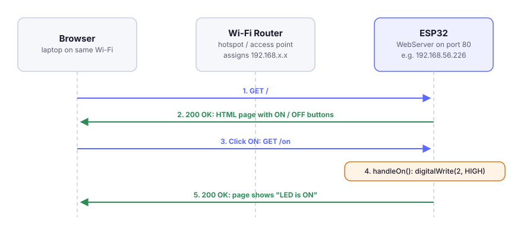
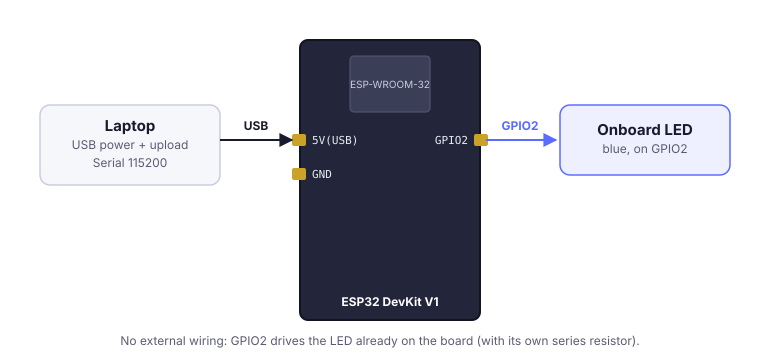
| ESP32 Pin | Connected To | Purpose |
|---|---|---|
| GPIO2 | Onboard blue LED | Digital output, HIGH = ON |
| Micro-USB (5V / GND) | Laptop | Power, firmware upload, Serial at 115200 baud |
// Task 1 — ESP32 Web Server & HTML LED Control
// The ESP32 joins the local Wi-Fi, hosts a web page on port 80, and switches
// the onboard LED when the page's ON / OFF buttons request /on or /off.
#include <WiFi.h>
#include <WebServer.h>
const char* WIFI_SSID = "YOUR_WIFI_SSID";
const char* WIFI_PASSWORD = "YOUR_WIFI_PASSWORD";
#define LED_PIN 2 // Onboard blue LED on the ESP32 DevKit
WebServer server(80);
bool ledState = false;
// The control page. <meta charset="UTF-8"> is required — without it the
// bulb emoji in the heading renders as garbled characters (see Problems).
const char PAGE[] PROGMEM = R"rawliteral(
<!DOCTYPE html>
<html>
<head>
<meta charset="UTF-8">
<meta name="viewport" content="width=device-width, initial-scale=1">
<title>ESP32 Light Control</title>
<style>
body { font-family: Arial, sans-serif; text-align: center; margin-top: 80px; }
h1 { margin-bottom: 8px; }
p { color: #555; }
.btn { display: inline-block; width: 120px; padding: 14px 0; margin: 12px;
font-size: 18px; color: #fff; border: none; border-radius: 6px;
cursor: pointer; text-decoration: none; }
.on { background: #2e8b2e; }
.off { background: #e53935; }
#state { margin-top: 20px; font-weight: bold; }
</style>
</head>
<body>
<h1>💡 ESP32 Light Control</h1>
<p>Control your ESP32 LED</p>
<a class="btn on" href="/on">ON</a>
<a class="btn off" href="/off">OFF</a>
<div id="state">LED is %STATE%</div>
</body>
</html>
)rawliteral";
void sendPage() {
String html = PAGE;
html.replace("%STATE%", ledState ? "ON" : "OFF");
server.send(200, "text/html; charset=UTF-8", html);
}
void handleRoot() {
sendPage();
}
void handleOn() {
ledState = true;
digitalWrite(LED_PIN, HIGH);
Serial.println("Request: /on -> LED ON");
sendPage();
}
void handleOff() {
ledState = false;
digitalWrite(LED_PIN, LOW);
Serial.println("Request: /off -> LED OFF");
sendPage();
}
void handleNotFound() {
server.send(404, "text/plain", "Not found");
}
void setup() {
Serial.begin(115200);
pinMode(LED_PIN, OUTPUT);
digitalWrite(LED_PIN, LOW);
WiFi.mode(WIFI_STA);
WiFi.begin(WIFI_SSID, WIFI_PASSWORD);
Serial.print("Connecting to Wi-Fi");
while (WiFi.status() != WL_CONNECTED) {
delay(500);
Serial.print(".");
}
Serial.println();
Serial.print("Connected. Open http://");
Serial.println(WiFi.localIP());
server.on("/", handleRoot);
server.on("/on", handleOn);
server.on("/off", handleOff);
server.onNotFound(handleNotFound);
server.begin();
Serial.println("Web server started on port 80");
}
void loop() {
server.handleClient();
}
The page is stored in flash as a raw string literal (R"rawliteral(...)"). It has a
heading, two buttons (green ON and red OFF) and a status line.
Before sending, the ESP32 replaces the %STATE% placeholder with the current LED state,
so the page always shows the real state.
/on, so the browser
sends GET http://192.168.56.226/on.server.on("/on", handleOn) sends
the request to handleOn().digitalWrite(LED_PIN, HIGH) turns the LED on,
and the change is logged over Serial.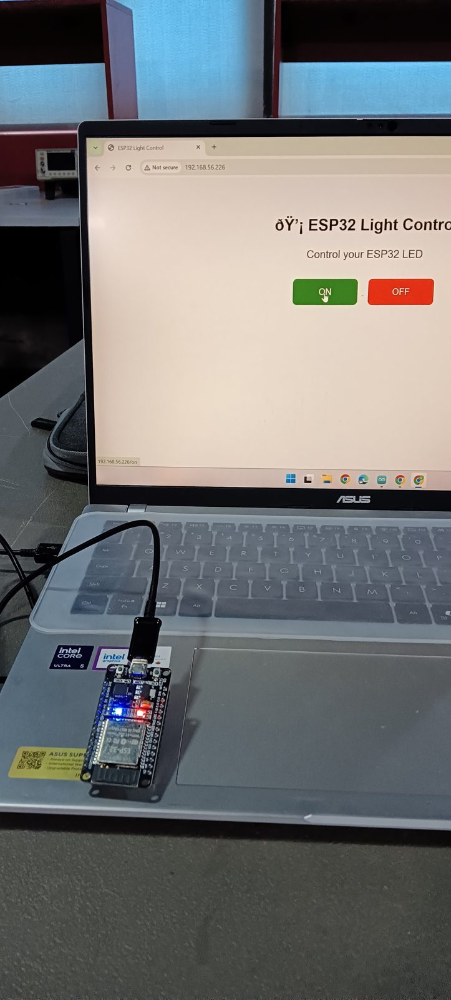
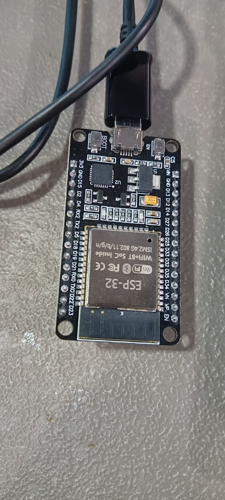
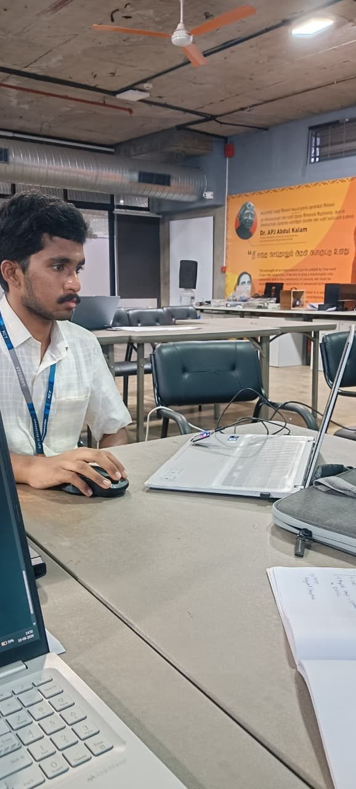
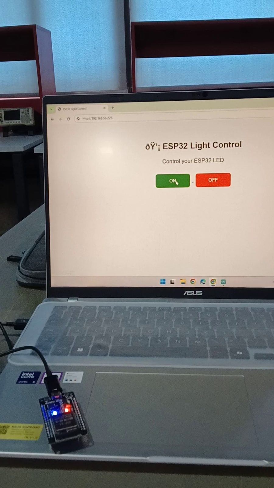
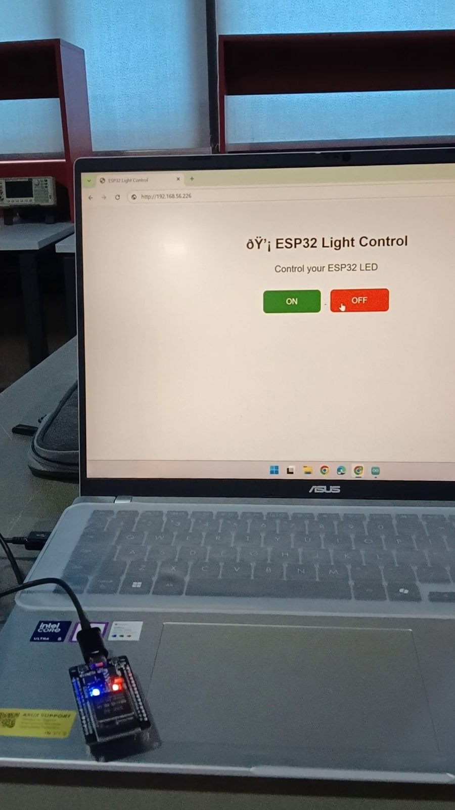
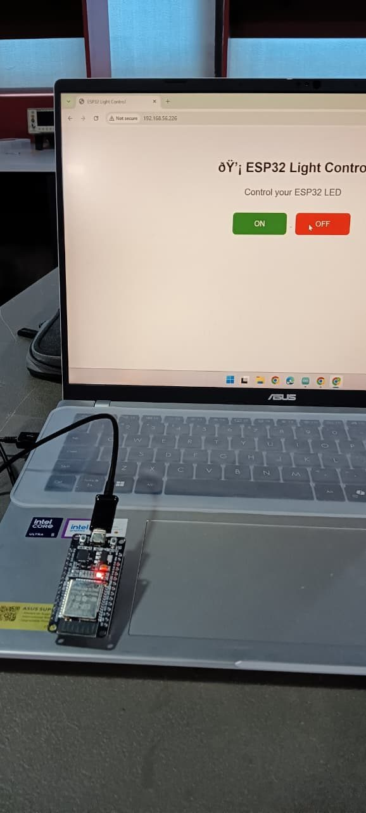
Problem: The page heading showed garbled characters ("ðŸ'¡") instead of the 💡 emoji. You can see this in the photos.
Solution: The browser was reading the UTF-8 page as Windows-1252. Adding
<meta charset="UTF-8"> and sending text/html; charset=UTF-8
fixed it. Using the HTML entity 💡 also makes it work whatever the
encoding.
Problem: The browser timed out when opening the ESP32's address.
Solution: The laptop and the ESP32 were on different networks. Connecting both to the same hotspot, and reading the current IP from the Serial Monitor after each reset, fixed it.
I learned that an embedded board can be a real network service. The browser just sends normal HTTP requests and the ESP32 decides what each URL does. The encoding bug showed that "small" details like character sets matter once a device serves its own UI.
Task 1 only worked on the local network. Adafruit IO is a cloud IoT platform that removes that limit. It stores device data in feeds, has a drag-and-drop dashboard builder, and runs a public MQTT broker. The ESP32 and the dashboard both connect to Adafruit IO, so the bulb can be controlled from anywhere with internet access, and I didn't have to build any server.
MQTT (Message Queuing Telemetry Transport) is a lightweight publish/subscribe protocol over TCP, made for low-power devices on unreliable networks. Clients never talk to each other directly. A client publishes a message to a topic, and the broker forwards it to every client subscribed to that topic. The headers are small (2 bytes minimum), and the connection stays open with keep-alive pings, so messages arrive almost instantly with no polling.
The Adafruit IO dashboard toggle publishes ON/OFF to the bulb feed. The ESP32 also publishes the confirmed state to bulb-status.
io.adafruit.com:1883. It authenticates clients with the username and AIO key, then forwards each message to the subscribers of that topic.
The ESP32 subscribes to bulb and switches the relay on every message. The dashboard subscribes to bulb-status to show the real state.
A topic is the address a message is published to. Adafruit IO calls each topic a
feed and also keeps a history of its values. Topics use the format
<username>/feeds/<feed-key>. Because of this, the dashboard and the ESP32
only need to agree on the feed name. Neither needs the other's address.
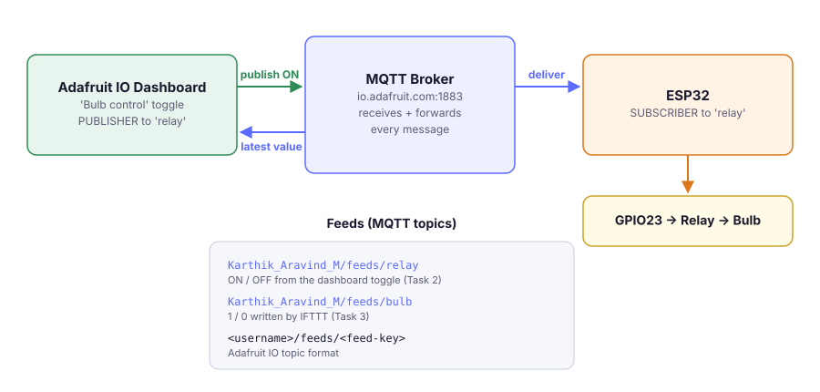
Karthik_Aravind_M. The key icon shows the username and the
AIO Key the ESP32 needs.bulb (commands), and a
second feed bulb-status (confirmed state).bulb with ON text ON and OFF text OFF.
Add an Indicator block on bulb-status.AIO_USERNAME and
AIO_KEY, then upload to the ESP32.Karthik_Aravind_M/feeds/bulb.ON to that
topic.ON to bulb-status, and
the dashboard indicator updates.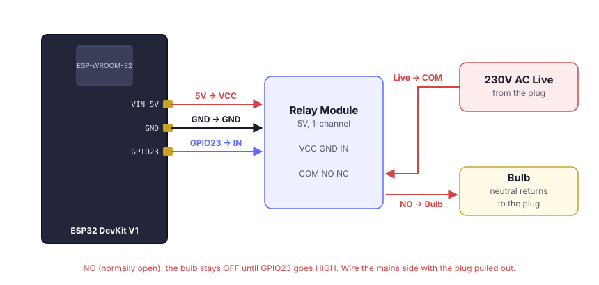
// Task 2 — Adafruit IO Dashboard & MQTT
// The ESP32 subscribes to the Adafruit IO feed "bulb" over MQTT. When the
// dashboard toggle publishes ON / OFF, the broker forwards it here and the
// relay switches the bulb. The new state is published back to "bulb-status".
//
// Library: "Adafruit MQTT Library" (Library Manager)
#include <WiFi.h>
#include "Adafruit_MQTT.h"
#include "Adafruit_MQTT_Client.h"
// ================================================
// Wi-Fi
// ================================================
#define WIFI_SSID "YOUR_WIFI_SSID"
#define WIFI_PASS "YOUR_WIFI_PASSWORD"
// ================================================
// Adafruit IO
// ================================================
#define AIO_SERVER "io.adafruit.com"
#define AIO_SERVERPORT 1883
#define AIO_USERNAME "YOUR_AIO_USERNAME"
#define AIO_KEY "YOUR_AIO_KEY"
// ================================================
// RELAY
// ================================================
#define RELAY_PIN 23
// Relay logic
#define RELAY_ON HIGH
#define RELAY_OFF LOW
WiFiClient client;
Adafruit_MQTT_Client mqtt(&client, AIO_SERVER, AIO_SERVERPORT, AIO_USERNAME, AIO_KEY);
// Feed topics follow the Adafruit IO format: <username>/feeds/<feed-key>
Adafruit_MQTT_Subscribe bulbFeed = Adafruit_MQTT_Subscribe(&mqtt, AIO_USERNAME "/feeds/bulb");
Adafruit_MQTT_Publish statusFeed = Adafruit_MQTT_Publish(&mqtt, AIO_USERNAME "/feeds/bulb-status");
// Connects (or reconnects) to the Adafruit IO broker
void connectMQTT() {
if (mqtt.connected()) return;
Serial.print("Connecting to Adafruit IO... ");
int8_t ret;
uint8_t retries = 5;
while ((ret = mqtt.connect()) != 0) {
Serial.println(mqtt.connectErrorString(ret));
Serial.println("Retrying in 5 seconds...");
mqtt.disconnect();
delay(5000);
if (--retries == 0) ESP.restart();
}
Serial.println("Connected!");
}
void setBulb(bool on) {
digitalWrite(RELAY_PIN, on ? RELAY_ON : RELAY_OFF);
statusFeed.publish(on ? "ON" : "OFF");
Serial.println(on ? "Bulb -> ON" : "Bulb -> OFF");
}
void setup() {
Serial.begin(115200);
pinMode(RELAY_PIN, OUTPUT);
digitalWrite(RELAY_PIN, RELAY_OFF);
WiFi.begin(WIFI_SSID, WIFI_PASS);
Serial.print("Connecting to Wi-Fi");
while (WiFi.status() != WL_CONNECTED) {
delay(500);
Serial.print(".");
}
Serial.println("\nWi-Fi connected: " + WiFi.localIP().toString());
mqtt.subscribe(&bulbFeed);
}
void loop() {
connectMQTT();
// Wait up to 2 s for a message on any subscribed feed
Adafruit_MQTT_Subscribe* sub;
while ((sub = mqtt.readSubscription(2000))) {
if (sub == &bulbFeed) {
String value = (char*)bulbFeed.lastread;
value.trim();
Serial.println("Received from feed 'bulb': " + value);
if (value == "ON" || value == "1") setBulb(true);
else if (value == "OFF" || value == "0") setBulb(false);
}
}
// Keep the connection alive — Adafruit IO drops idle clients
if (!mqtt.ping()) mqtt.disconnect();
}Adafruit_MQTT_Client mqtt(&client, AIO_SERVER, 1883, …) creates an MQTT client over
a plain WiFiClient TCP socket, logging in with the Adafruit IO credentials.Adafruit_MQTT_Subscribe bulbFeed(…"/feeds/bulb") declares the subscription.
mqtt.subscribe(&bulbFeed) registers it before connecting.connectMQTT() reconnects whenever the link drops and restarts the board after
5 failed attempts, so a lost connection recovers by itself.mqtt.readSubscription(2000) waits up to 2 s for new messages.
lastread holds the payload ("ON" / "OFF").setBulb() drives GPIO23 and publishes the new state to bulb-status,
so the dashboard shows what actually happened, not just what was asked.mqtt.ping() keeps the connection alive. Adafruit IO drops clients that stay
silent too long.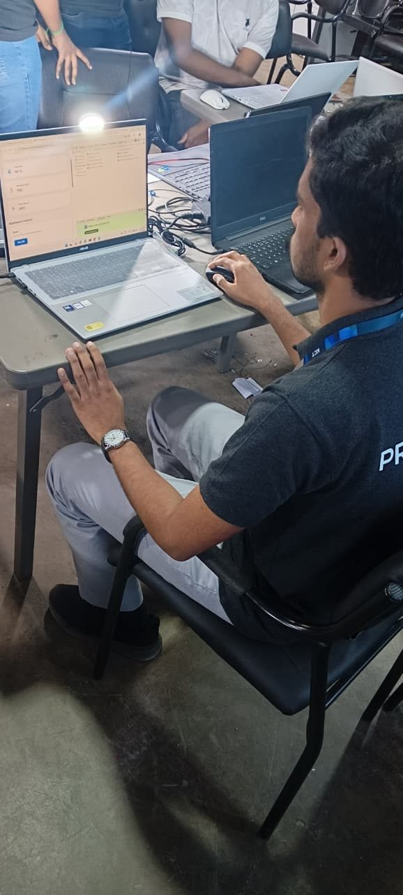
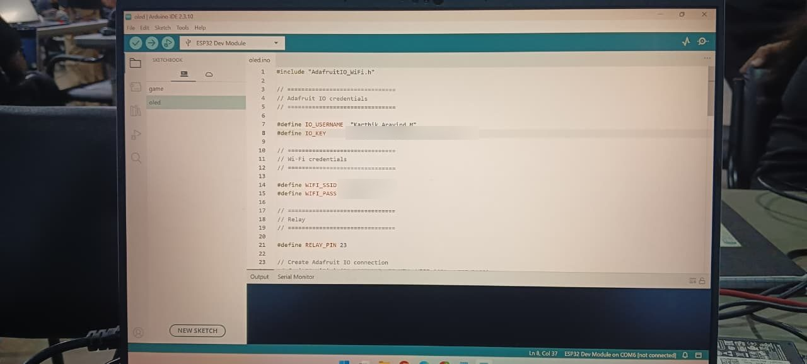
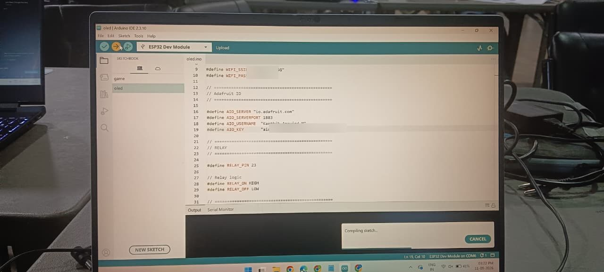
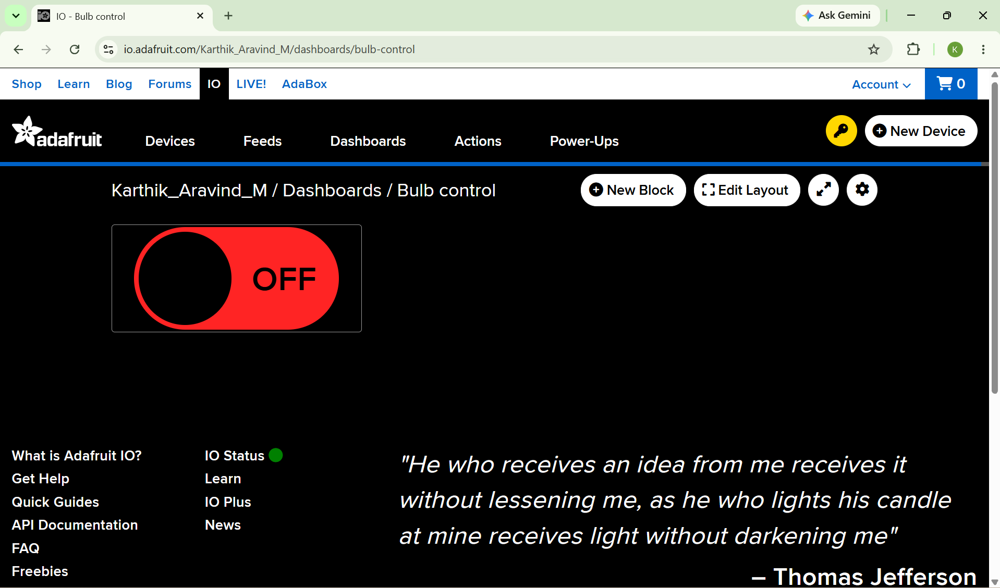
Karthik_Aravind_M): toggle block OFF.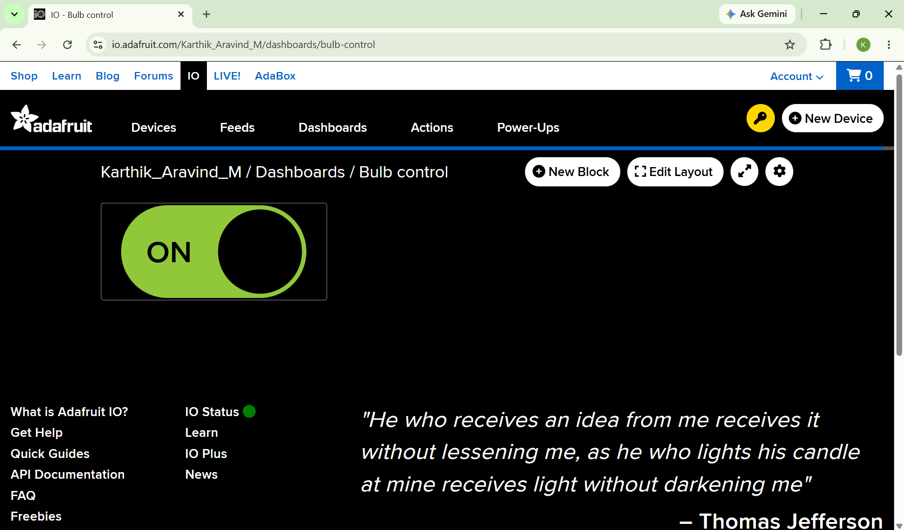
ON to the bulb feed.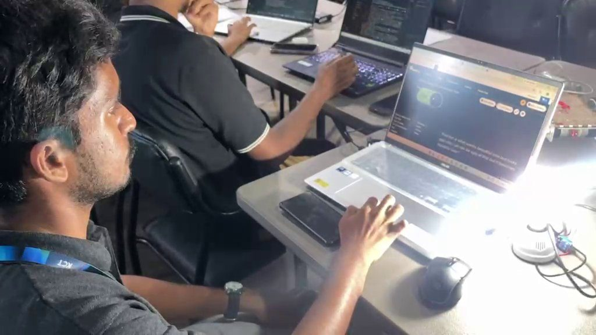
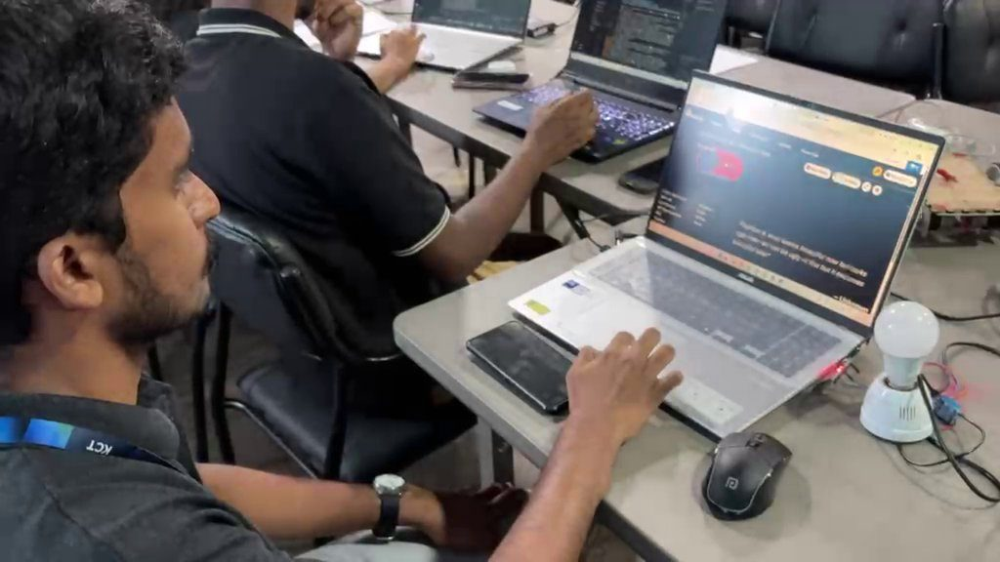
Problem: The ESP32 connected once, then stopped reacting to the dashboard after a while.
Solution: Adafruit IO closes MQTT connections that send nothing. I added
mqtt.ping() on every loop and a reconnect check at the start of each loop.
Problem: The broker returned a connection refused error.
Solution: The feed path is case-sensitive and must use the exact username
(Karthik_Aravind_M/feeds/bulb). Fixing the username and copying the AIO key again
from the key page solved it.
Problem: Photos of the sketch showed the AIO key and Wi-Fi password in plain text.
Solution: The credentials are blurred in every photo here, the published code uses placeholders, and the AIO key should be regenerated. Real keys should never be committed.
MQTT changed how I think about device communication. In Task 1 the browser had to know the ESP32's IP. Here both sides only know a topic name, and the broker does the routing. The device is also the one that connects out, so it works behind any router. I also saw that the device should report its real state back, because a command being sent doesn't mean it was carried out.
Switch the bulb with a voice command from a phone, without writing any server code. IFTTT connects Google Assistant to Adafruit IO, and the ESP32 from Task 2 receives the result over MQTT.
IoT automation means a device acts on its own when an event happens, instead of someone operating it directly. The event can be a voice command, a time of day, a location or a sensor reading. Cloud automation services watch for these events and send commands to devices.
IFTTT ("If This Then That") is a no-code automation service that links hundreds of apps and devices with small rules called applets. It already integrates with both Google Assistant and Adafruit IO, so voice control needs no custom backend, no public IP for the ESP32, and no changes to the Task 2 hardware.
The event IFTTT watches for. Here: Google Assistant: activate scene "Bulb On", said on the phone.
What IFTTT does when the trigger fires. Here: Adafruit: send data to Adafruit IO, which writes ON into the bulb feed.
The bridge between IFTTT and the device. IFTTT can't reach an ESP32 on a hotspot, but it can write to a feed. Adafruit IO then pushes that value to the ESP32 over MQTT.
bulb + MQTT broker| Applet | Trigger (If This) | Action (Then That) | Feed → Value |
|---|---|---|---|
| Bulb ON | Google Assistant: "Okay Google, activate Bulb On" | Adafruit: send data to Adafruit IO | bulb → ON |
| Bulb OFF | Google Assistant: "Okay Google, activate Bulb Off" | Adafruit: send data to Adafruit IO | bulb → OFF |
Bulb On.bulb, data ON. Save the applet.Bulb Off and the value OFF.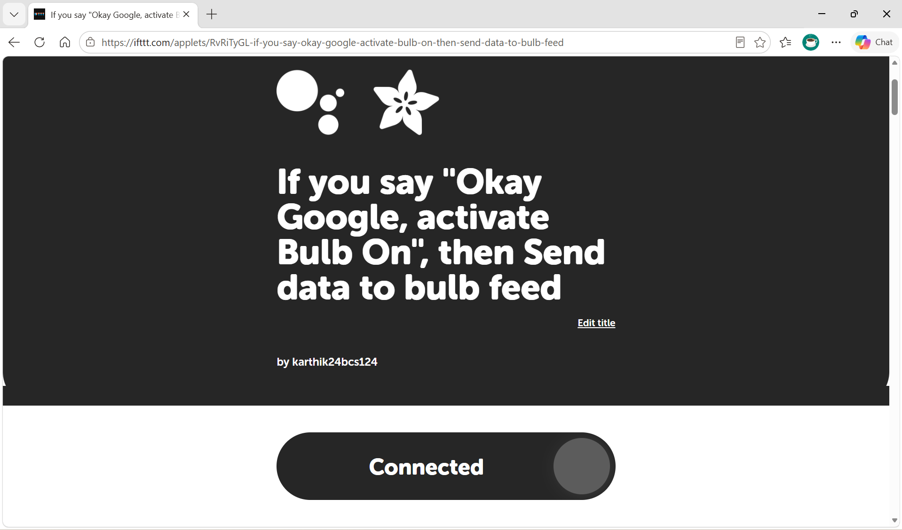
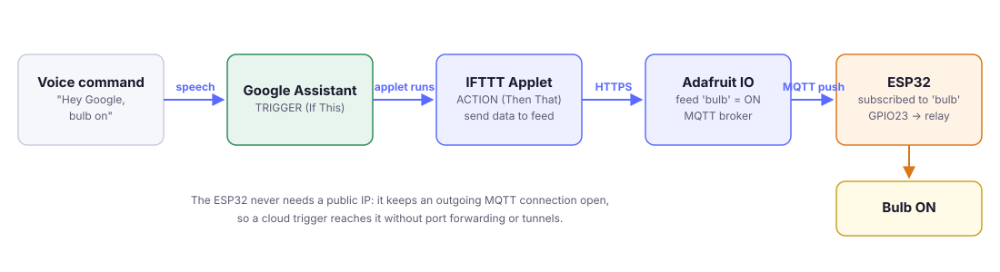
Google Assistant recognises the phrase and fires the IFTTT trigger. IFTTT calls the Adafruit IO
API over HTTPS and stores ON in the bulb feed. Adafruit IO's MQTT broker
publishes that new value to every subscriber, which includes the ESP32. The ESP32 then switches
the relay. The device is never contacted directly, so no port forwarding is
needed.
// Task 3 — IFTTT + Adafruit IO IoT Automation
// IFTTT applets write "ON" / "OFF" into the Adafruit IO feed "bulb" when a
// trigger fires (Google Assistant voice command from the phone). The ESP32
// is subscribed to that feed over MQTT, so the command reaches the relay
// without the ESP32 ever being exposed to the internet.
//
// The firmware side is the Task 2 subscriber plus: tolerant command parsing
// (IFTTT sends free text), a source log, and an automatic Wi-Fi/MQTT recovery
// path that was needed while testing under different conditions.
//
// Library: "Adafruit MQTT Library" (Library Manager)
#include <WiFi.h>
#include "Adafruit_MQTT.h"
#include "Adafruit_MQTT_Client.h"
#define WIFI_SSID "YOUR_WIFI_SSID"
#define WIFI_PASS "YOUR_WIFI_PASSWORD"
#define AIO_SERVER "io.adafruit.com"
#define AIO_SERVERPORT 1883
#define AIO_USERNAME "YOUR_AIO_USERNAME"
#define AIO_KEY "YOUR_AIO_KEY"
#define RELAY_PIN 23
#define RELAY_ON HIGH
#define RELAY_OFF LOW
WiFiClient client;
Adafruit_MQTT_Client mqtt(&client, AIO_SERVER, AIO_SERVERPORT, AIO_USERNAME, AIO_KEY);
Adafruit_MQTT_Subscribe bulbFeed = Adafruit_MQTT_Subscribe(&mqtt, AIO_USERNAME "/feeds/bulb");
Adafruit_MQTT_Publish statusFeed = Adafruit_MQTT_Publish(&mqtt, AIO_USERNAME "/feeds/bulb-status");
bool bulbOn = false;
void connectWiFi() {
if (WiFi.status() == WL_CONNECTED) return;
Serial.print("Connecting to Wi-Fi");
WiFi.begin(WIFI_SSID, WIFI_PASS);
while (WiFi.status() != WL_CONNECTED) {
delay(500);
Serial.print(".");
}
Serial.println("\nWi-Fi connected: " + WiFi.localIP().toString());
}
void connectMQTT() {
if (mqtt.connected()) return;
Serial.print("Connecting to Adafruit IO... ");
int8_t ret;
while ((ret = mqtt.connect()) != 0) {
Serial.println(mqtt.connectErrorString(ret));
mqtt.disconnect();
delay(5000);
}
Serial.println("Connected!");
}
// IFTTT passes whatever text the applet was configured with, so accept a
// few spellings instead of only an exact "ON" / "OFF".
int parseCommand(String v) {
v.trim();
v.toUpperCase();
if (v == "ON" || v == "1" || v == "TRUE" || v.indexOf("TURN ON") >= 0) return 1;
if (v == "OFF" || v == "0" || v == "FALSE" || v.indexOf("TURN OFF") >= 0) return 0;
return -1;
}
void setBulb(bool on) {
if (on == bulbOn) {
Serial.println("Bulb already " + String(on ? "ON" : "OFF") + " - ignoring");
return;
}
bulbOn = on;
digitalWrite(RELAY_PIN, on ? RELAY_ON : RELAY_OFF);
statusFeed.publish(on ? "ON" : "OFF");
Serial.println(on ? "IFTTT trigger -> Bulb ON" : "IFTTT trigger -> Bulb OFF");
}
void setup() {
Serial.begin(115200);
pinMode(RELAY_PIN, OUTPUT);
digitalWrite(RELAY_PIN, RELAY_OFF);
connectWiFi();
mqtt.subscribe(&bulbFeed);
}
void loop() {
connectWiFi(); // recovers if the hotspot drops
connectMQTT();
Adafruit_MQTT_Subscribe* sub;
while ((sub = mqtt.readSubscription(2000))) {
if (sub == &bulbFeed) {
String value = (char*)bulbFeed.lastread;
Serial.println("Feed 'bulb' received: " + value);
int cmd = parseCommand(value);
if (cmd == -1) Serial.println("Unknown command - ignored");
else setBulb(cmd == 1);
}
}
if (!mqtt.ping()) mqtt.disconnect();
}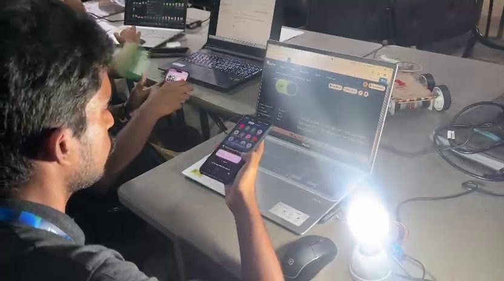
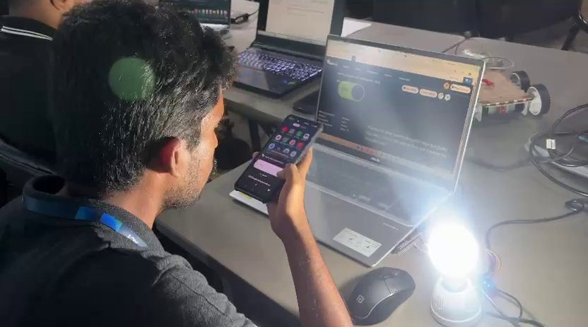
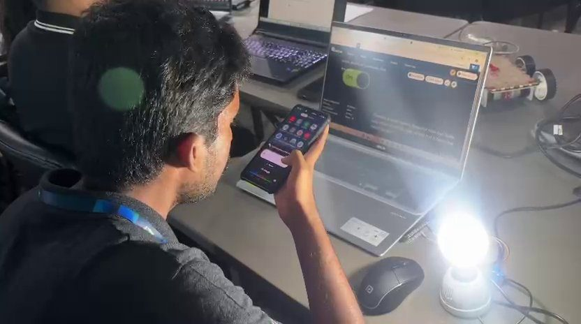
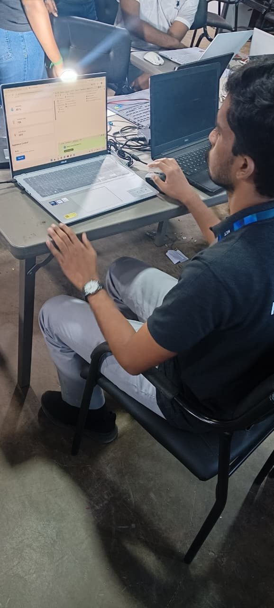
| Condition | What happens | Handled by |
|---|---|---|
| Normal ON / OFF voice command | Bulb switches after IFTTT runs the applet | Shown in the demo video |
| Same command twice ("on", "on") | Second command ignored, no relay click | if (on == bulbOn) check |
| Unexpected text in the feed | Logged and ignored, bulb unchanged | parseCommand() returns -1 |
| Hotspot drops and comes back | ESP32 reconnects Wi-Fi, then MQTT, and resumes | connectWiFi() / connectMQTT() |
| Toggle used from the dashboard instead | Same feed, same result: both paths work together | Shared bulb feed |
Problem: There was a delay of a few seconds between speaking and the bulb switching.
Solution: The MQTT path itself is instant. The delay comes from IFTTT processing the applet. That's acceptable for lighting, and I documented it as a limitation of free-tier cloud automation.
Problem: An earlier attempt sent IFTTT webhooks straight to the ESP32's local IP, and they never arrived.
Solution: IFTTT runs in the cloud and can't reach a private 192.168.x.x address. Using Adafruit IO as the middle step means the ESP32 connects out to the broker, so nothing has to connect in to it.
Problem: IFTTT sometimes sent the value with extra spaces or different capital letters.
Solution: parseCommand() trims the text, converts it to upper case, and
accepts ON/1/TRUE and OFF/0/FALSE.
Cloud automation is mostly about connecting services, not writing code. The firmware hardly changed from Task 2. What changed was who publishes to the feed. Each extra service makes things easier to build, but also adds some delay and another account that can fail.
The key idea was separating the trigger from the device. Because the ESP32 listens to a feed and not to a particular sender, any source (a dashboard, a voice assistant, a schedule) can control it with no firmware changes.
Build my own cloud dashboard with a login, hosted at
iot-dashboard-karthik.web.app. Only signed-in users can see readings or switch the
bulb. Commands and readings go through a Firebase database instead of a third-party dashboard.
Cloud computing means using computing resources (servers, storage, databases, software) over the internet, when you need them, and paying for what you use, instead of owning and running the hardware yourself. The provider handles uptime, scaling and maintenance.
Rented virtual machines, storage and networks. You manage the OS and everything above it. e.g. AWS EC2, Google Compute Engine.
A managed runtime. You deploy code and the platform runs it and scales it. e.g. Heroku, Google App Engine.
A finished application used through the browser. You manage nothing. e.g. Gmail, Adafruit IO, IFTTT.
Ready-made backend features (database, authentication, hosting, storage) used through SDKs, so an app needs no server code. e.g. Firebase, which this task uses.
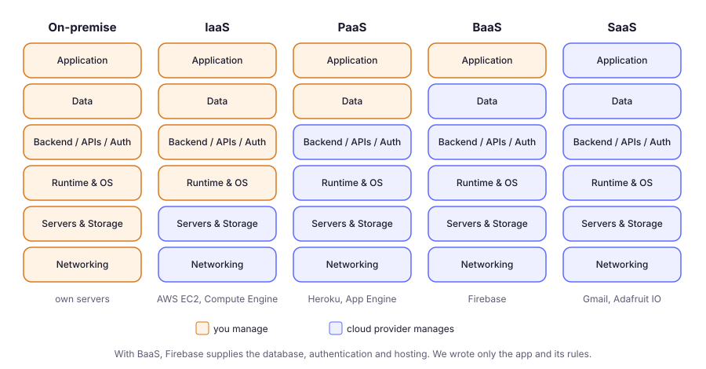
A cloud platform is a provider's full set of services under one account and console, for example Google Cloud, AWS or Azure. Firebase runs on Google Cloud. One Firebase project gave me Hosting, Authentication and Cloud Firestore, all linked together.
A database is an organised store of data that can be searched and updated efficiently and shared safely by many users. Relational databases (MySQL) use tables with a fixed schema. NoSQL databases store flexible documents or key–value data. That suits IoT readings well, because different devices can send different fields.
Firebase offers two NoSQL databases. The Realtime Database stores everything as
one big JSON tree and syncs changes to connected clients in milliseconds.
Cloud Firestore is the newer one. It stores data as documents inside
collections, supports richer queries (sorting, limits), and has the same live updates
through onSnapshot. I used Cloud Firestore (region
asia-south1, real-time updates enabled), because Task 5's history needs queries like
"newest 50 entries sorted by timestamp".
A web page, hosted online, that shows live device data and sends commands. It works from any browser and needs no installation. Because it reads from the cloud database and not from the device, it keeps working when the user and the device are on different networks.
Authentication proves who a user is. Without a login, anyone who found the URL could switch someone's appliances. Firebase Authentication checks the email/password (or Google account) and gives the browser a signed ID token. Every database request carries that token. The ESP32 signs in with its own device account in the same way.
| Authentication | Authorization | |
|---|---|---|
| Question | Who are you? | What are you allowed to do? |
| Happens | First, at login | On every request, after login |
| In this project | Firebase Authentication (email/password, Google) | Firestore Security Rules (request.auth != null) |
| Failure | "Incorrect email or password", stays on login page | "Missing or insufficient permissions", request refused |
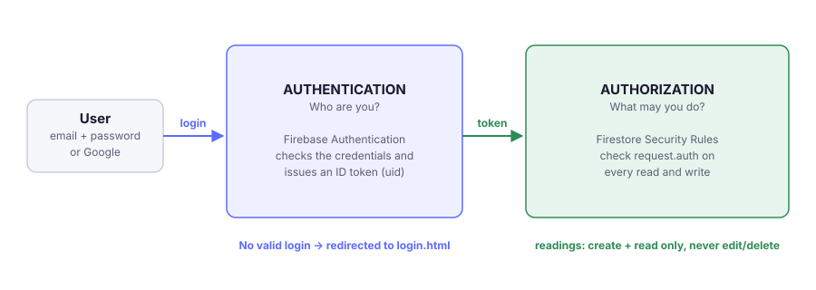
iot-dashboard-karthik) on the free Spark plan.firebase-config.js.asia-south1. Add the collections control and sensors.npm i -g firebase-tools → firebase login → firebase init (Hosting, Firestore, Auth) inside the iot-dashboard folder.firebase deploy. The site is live at iot-dashboard-karthik.web.app.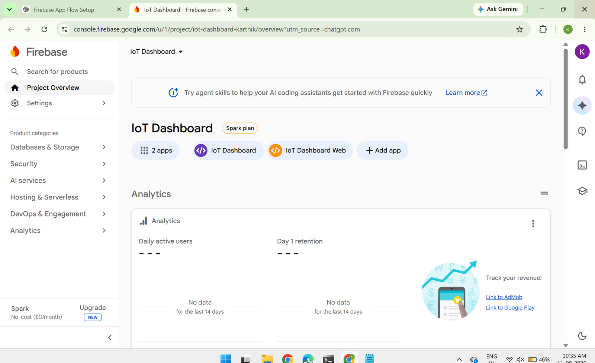
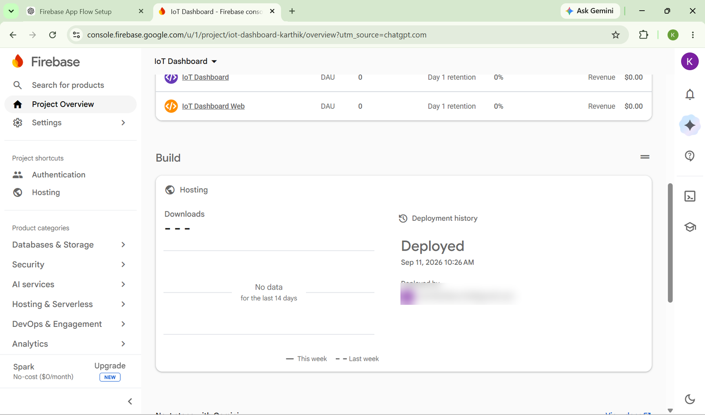
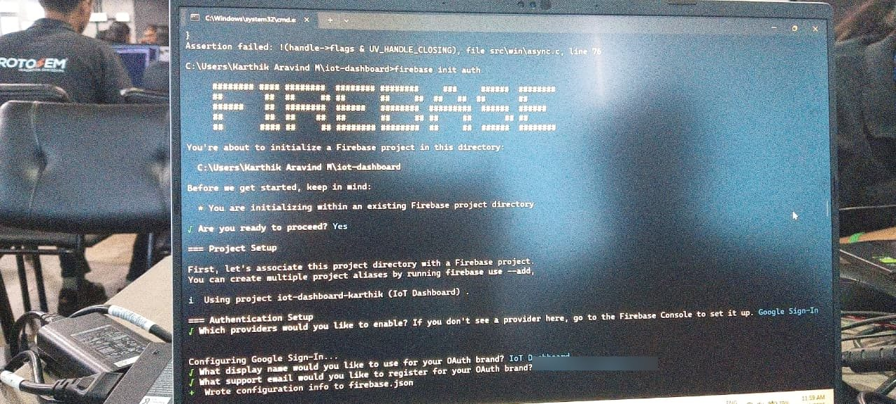
firebase init auth in the CLI, setting up Google Sign-In.iot-dashboard-karthik.web.app so Google sign-in pop-ups work.onAuthStateChanged sends signed-out visitors from dashboard.html back to login.html.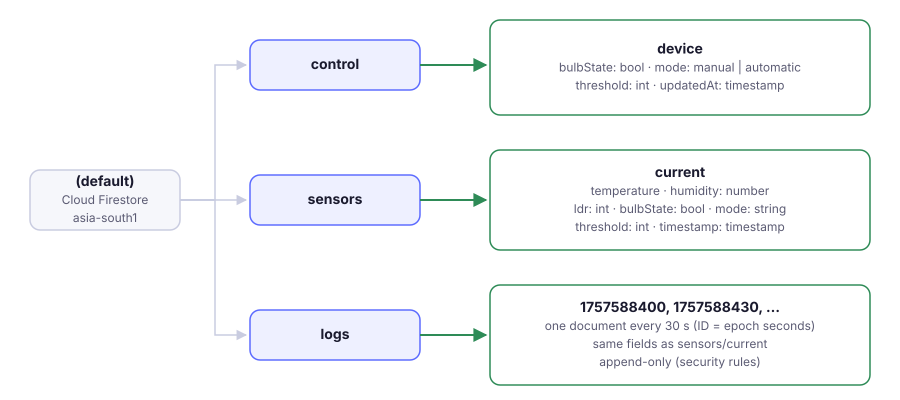
control and sensors. Task 5 adds readings.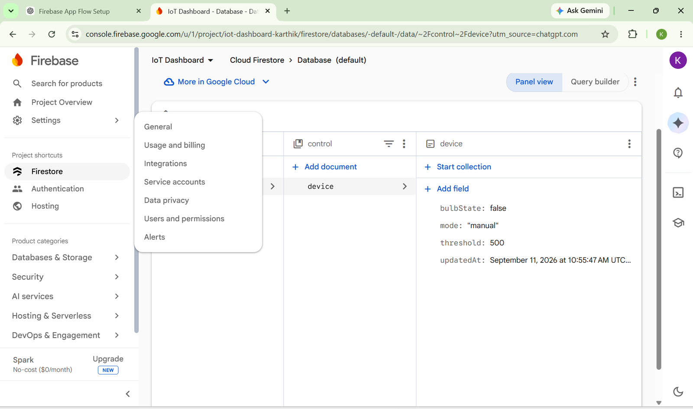
control/device: commands written by the dashboard.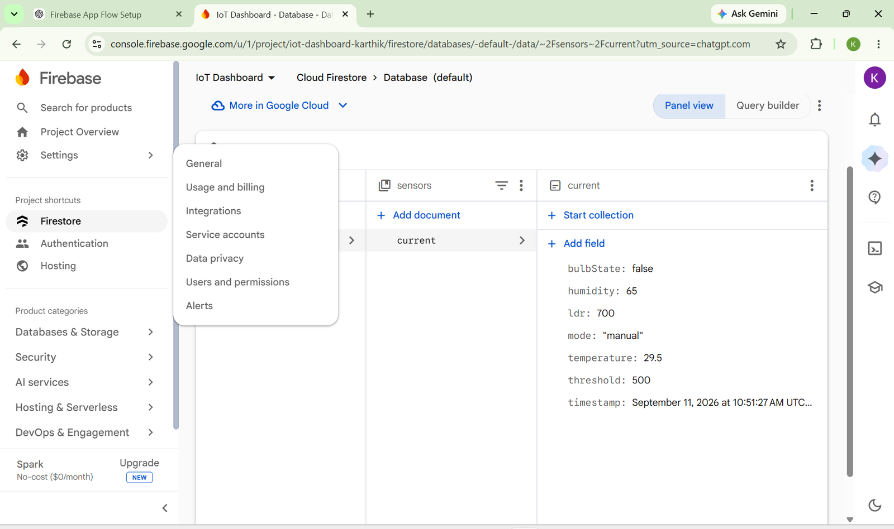
sensors/current: latest values reported by the ESP32.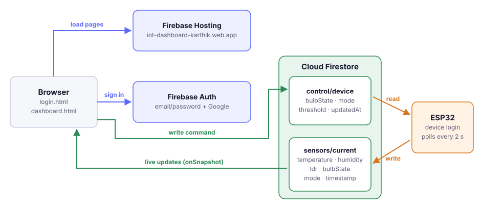
<!DOCTYPE html>
<html lang="en">
<head>
<meta charset="UTF-8">
<meta name="viewport" content="width=device-width, initial-scale=1">
<title>Login - IoT Dashboard</title>
<link rel="stylesheet" href="css/style.css">
</head>
<body class="auth-page">
<main class="auth-card">
<div class="auth-icon">🔐</div>
<h1 id="formTitle">Welcome Back</h1>
<p class="muted" id="formSub">Login to access your IoT Dashboard</p>
<form id="authForm">
<input type="email" id="email" placeholder="Email" autocomplete="email" required>
<input type="password" id="password" placeholder="Password" autocomplete="current-password"
minlength="6" required>
<button type="submit" class="btn-primary" id="submitBtn">Login</button>
</form>
<div class="divider">OR</div>
<button class="btn-outline" id="googleBtn">Continue with Google</button>
<p class="error" id="error" role="alert"></p>
<p class="muted switch">
<span id="switchText">Don't have an account?</span>
<a href="#" id="switchLink">Create Account</a>
</p>
</main>
<script type="module" src="js/auth.js"></script>
</body>
</html>// Login page: email/password sign-in, account creation and Google sign-in.
// On success the user is sent to the dashboard; dashboard.js redirects back
// here if no one is signed in.
import { auth } from "./firebase-config.js";
import {
signInWithEmailAndPassword,
createUserWithEmailAndPassword,
GoogleAuthProvider,
signInWithPopup,
onAuthStateChanged
} from "https://www.gstatic.com/firebasejs/10.12.2/firebase-auth.js";
const form = document.getElementById("authForm");
const errorEl = document.getElementById("error");
const switchLink = document.getElementById("switchLink");
let creating = false;
// Already signed in -> skip the login page
onAuthStateChanged(auth, (user) => {
if (user) window.location.href = "dashboard.html";
});
// Firebase error codes -> messages a user can act on
function friendlyError(code) {
switch (code) {
case "auth/invalid-credential":
case "auth/wrong-password":
case "auth/user-not-found": return "Incorrect email or password.";
case "auth/email-already-in-use": return "An account already exists for this email.";
case "auth/weak-password": return "Password must be at least 6 characters.";
case "auth/too-many-requests": return "Too many attempts. Try again in a few minutes.";
case "auth/popup-closed-by-user": return "Google sign-in was cancelled.";
default: return "Something went wrong (" + code + ").";
}
}
form.addEventListener("submit", async (e) => {
e.preventDefault();
errorEl.textContent = "";
const email = document.getElementById("email").value.trim();
const password = document.getElementById("password").value;
try {
if (creating) await createUserWithEmailAndPassword(auth, email, password);
else await signInWithEmailAndPassword(auth, email, password);
} catch (err) {
errorEl.textContent = friendlyError(err.code);
}
});
document.getElementById("googleBtn").addEventListener("click", async () => {
errorEl.textContent = "";
try {
await signInWithPopup(auth, new GoogleAuthProvider());
} catch (err) {
errorEl.textContent = friendlyError(err.code);
}
});
switchLink.addEventListener("click", (e) => {
e.preventDefault();
creating = !creating;
document.getElementById("formTitle").textContent = creating ? "Create Account" : "Welcome Back";
document.getElementById("formSub").textContent = creating
? "Sign up to start monitoring your devices"
: "Login to access your IoT Dashboard";
document.getElementById("submitBtn").textContent = creating ? "Sign Up" : "Login";
document.getElementById("switchText").textContent = creating ? "Already have an account?" : "Don't have an account?";
switchLink.textContent = creating ? "Login" : "Create Account";
});<!DOCTYPE html>
<html lang="en">
<head>
<meta charset="UTF-8">
<meta name="viewport" content="width=device-width, initial-scale=1">
<title>IoT Dashboard</title>
<link rel="stylesheet" href="css/style.css">
</head>
<body>
<header class="topbar">
<div>
<h1>IoT Dashboard</h1>
<p>Smart Environment Monitoring & Control</p>
</div>
<div class="user">
<span id="userEmail"></span>
<button class="btn-danger" id="logoutBtn">Logout</button>
</div>
</header>
<main class="container">
<h2>Environmental Monitoring</h2>
<section class="cards">
<div class="card stat"><span class="icon">🌡️</span><div><small>Temperature</small><strong id="temp">-- °C</strong></div></div>
<div class="card stat"><span class="icon">💧</span><div><small>Humidity</small><strong id="hum">-- %</strong></div></div>
<div class="card stat"><span class="icon">💡</span><div><small>Ambient Light</small><strong id="ldr">--</strong></div></div>
<div class="card stat"><span class="icon">⚡</span><div><small>Bulb Status</small><strong id="bulbStatus">--</strong></div></div>
</section>
<h2>Appliance Control</h2>
<section class="card row">
<div>
<h3>Bulb</h3>
<p class="muted">Control the connected appliance.</p>
</div>
<button class="btn-primary" id="bulbBtn">Turn ON</button>
</section>
<p class="muted" id="lastUpdate">Waiting for device data…</p>
</main>
<footer>By: Karthik Aravind M</footer>
<script type="module" src="js/dashboard.js"></script>
</body>
</html>// Dashboard: protected page. Listens to sensors/current in real time and
// writes the bulb command to control/device, which the ESP32 polls.
import { auth, db } from "./firebase-config.js";
import { onAuthStateChanged, signOut } from "https://www.gstatic.com/firebasejs/10.12.2/firebase-auth.js";
import {
doc, onSnapshot, setDoc, serverTimestamp
} from "https://www.gstatic.com/firebasejs/10.12.2/firebase-firestore.js";
const $ = (id) => document.getElementById(id);
const controlRef = doc(db, "control", "device");
const sensorRef = doc(db, "sensors", "current");
let bulbState = false;
// Route guard: no user -> back to login
onAuthStateChanged(auth, (user) => {
if (!user) {
window.location.href = "login.html";
return;
}
console.log("Logged in user:", user.email);
$("userEmail").textContent = user.email;
startListeners();
});
function startListeners() {
// Live readings + the bulb state the ESP32 confirmed
onSnapshot(sensorRef, (snap) => {
if (!snap.exists()) return;
const d = snap.data();
if (d.temperature !== undefined) $("temp").textContent = `${d.temperature} °C`;
if (d.humidity !== undefined) $("hum").textContent = `${d.humidity} %`;
if (d.ldr !== undefined) $("ldr").textContent = d.ldr;
$("bulbStatus").textContent = d.bulbState ? "ON" : "OFF";
if (d.timestamp) $("lastUpdate").textContent = "Last update: " + d.timestamp.toDate().toLocaleString();
});
// The command currently stored in Firestore drives the button label
onSnapshot(controlRef, (snap) => {
if (!snap.exists()) return;
bulbState = !!snap.data().bulbState;
$("bulbBtn").textContent = bulbState ? "Turn OFF" : "Turn ON";
});
}
$("bulbBtn").addEventListener("click", async () => {
const next = !bulbState;
console.log("Bulb command:", next);
await setDoc(controlRef, { bulbState: next, updatedAt: serverTimestamp() }, { merge: true });
});
$("logoutBtn").addEventListener("click", () => signOut(auth));// Shared Firebase setup for every page of the dashboard.
// The web config is not a secret — access is controlled by Firebase
// Authentication and the Firestore security rules (see firestore.rules).
import { initializeApp } from "https://www.gstatic.com/firebasejs/10.12.2/firebase-app.js";
import { getAuth } from "https://www.gstatic.com/firebasejs/10.12.2/firebase-auth.js";
import { getFirestore } from "https://www.gstatic.com/firebasejs/10.12.2/firebase-firestore.js";
const firebaseConfig = {
apiKey: "YOUR_FIREBASE_WEB_API_KEY",
authDomain: "iot-dashboard-karthik.firebaseapp.com",
projectId: "iot-dashboard-karthik",
storageBucket: "iot-dashboard-karthik.appspot.com",
messagingSenderId: "YOUR_SENDER_ID",
appId: "YOUR_APP_ID"
};
export const app = initializeApp(firebaseConfig);
export const auth = getAuth(app);
export const db = getFirestore(app);rules_version = '2';
// Authentication decides WHO the request comes from.
// These rules decide WHAT that signed-in user is allowed to do (authorization).
service cloud.firestore {
match /databases/{database}/documents {
// Live readings: any signed-in user (dashboard or ESP32 device user)
match /sensors/{docId} {
allow read, write: if request.auth != null;
}
// Commands from the dashboard to the ESP32
match /control/{docId} {
allow read, write: if request.auth != null;
}
// Historical readings (Task 5): append-only — entries can be added and
// read, never edited or deleted from the client
match /readings/{readingId} {
allow read, create: if request.auth != null;
allow update, delete: if false;
}
}
}// Task 4 — Firebase IoT Monitoring Dashboard (device side)
// The ESP32 signs in to Firebase as a device user, polls the Firestore
// document control/device for the bulb command written by the web
// dashboard, drives the relay, and reports the real state back to
// sensors/current so the dashboard can show it.
//
// Library: "Firebase Arduino Client Library for ESP8266 and ESP32" (Mobizt)
#include <WiFi.h>
#include <Firebase_ESP_Client.h>
#include "addons/TokenHelper.h"
#include <time.h>
#define WIFI_SSID "YOUR_WIFI_SSID"
#define WIFI_PASSWORD "YOUR_WIFI_PASSWORD"
#define API_KEY "YOUR_FIREBASE_WEB_API_KEY"
#define FIREBASE_PROJECT_ID "iot-dashboard-karthik"
// A Firebase Authentication user created only for the ESP32, so the
// Firestore rules can require request.auth for every read and write.
#define DEVICE_EMAIL "device@your-domain.com"
#define DEVICE_PASSWORD "YOUR_DEVICE_PASSWORD"
#define RELAY_PIN 23
FirebaseData fbdo;
FirebaseAuth auth;
FirebaseConfig config;
bool bulbState = false;
unsigned long lastPoll = 0;
const unsigned long POLL_MS = 2000;
String isoTimestamp() {
time_t now;
time(&now);
char buf[25];
strftime(buf, sizeof(buf), "%Y-%m-%dT%H:%M:%SZ", gmtime(&now));
return String(buf);
}
// Reads control/device -> bulbState written by the dashboard
bool readCommand(bool& cmd) {
if (!Firebase.Firestore.getDocument(&fbdo, FIREBASE_PROJECT_ID, "", "control/device", "")) {
Serial.println("Read failed: " + fbdo.errorReason());
return false;
}
FirebaseJson json;
FirebaseJsonData data;
json.setJsonData(fbdo.payload());
json.get(data, "fields/bulbState/booleanValue");
if (!data.success) return false;
cmd = data.boolValue;
return true;
}
// Writes the confirmed relay state to sensors/current
void reportState() {
FirebaseJson content;
content.set("fields/bulbState/booleanValue", bulbState);
content.set("fields/timestamp/timestampValue", isoTimestamp());
if (!Firebase.Firestore.patchDocument(&fbdo, FIREBASE_PROJECT_ID, "", "sensors/current",
content.raw(), "bulbState,timestamp")) {
Serial.println("Write failed: " + fbdo.errorReason());
}
}
void setup() {
Serial.begin(115200);
pinMode(RELAY_PIN, OUTPUT);
digitalWrite(RELAY_PIN, LOW);
WiFi.begin(WIFI_SSID, WIFI_PASSWORD);
Serial.print("Connecting to Wi-Fi");
while (WiFi.status() != WL_CONNECTED) {
delay(300);
Serial.print(".");
}
Serial.println("\nWi-Fi connected: " + WiFi.localIP().toString());
// NTP time is needed for timestamps and for the auth token's expiry check
configTime(0, 0, "pool.ntp.org", "time.google.com");
config.api_key = API_KEY;
auth.user.email = DEVICE_EMAIL;
auth.user.password = DEVICE_PASSWORD;
config.token_status_callback = tokenStatusCallback;
Firebase.begin(&config, &auth);
Firebase.reconnectWiFi(true);
}
void loop() {
if (!Firebase.ready() || millis() - lastPoll < POLL_MS) return;
lastPoll = millis();
Serial.println("Checking Firebase control...");
bool cmd;
if (readCommand(cmd) && cmd != bulbState) {
bulbState = cmd;
digitalWrite(RELAY_PIN, bulbState ? HIGH : LOW);
Serial.println(bulbState ? "Bulb command: ON" : "Bulb command: OFF");
reportState();
}
}The stylesheet (css/style.css) and firebase.json are in the repository.
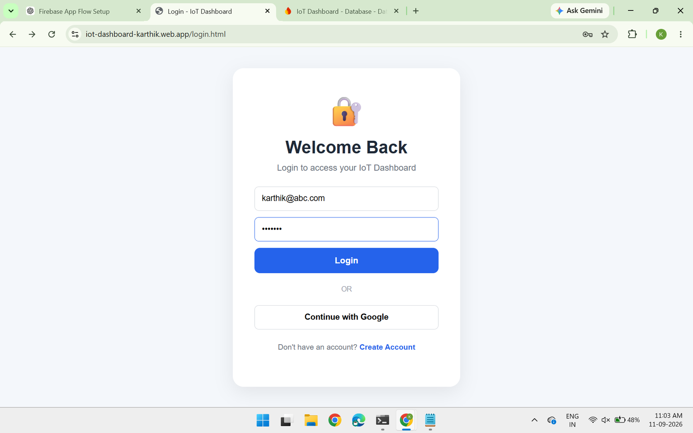
/login.html: email/password, Google sign-in and Create Account.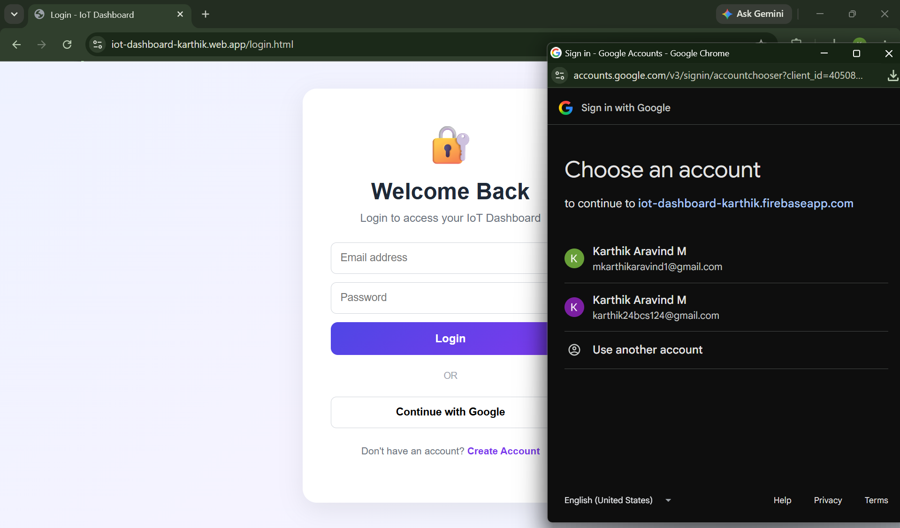
iot-dashboard-karthik.firebaseapp.com.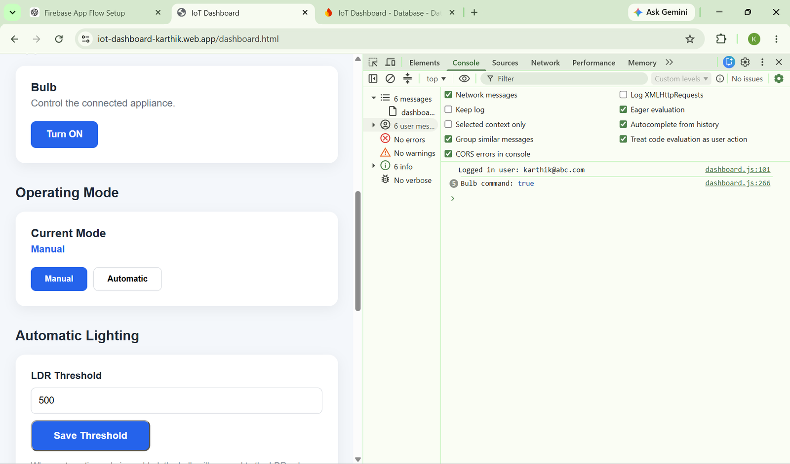
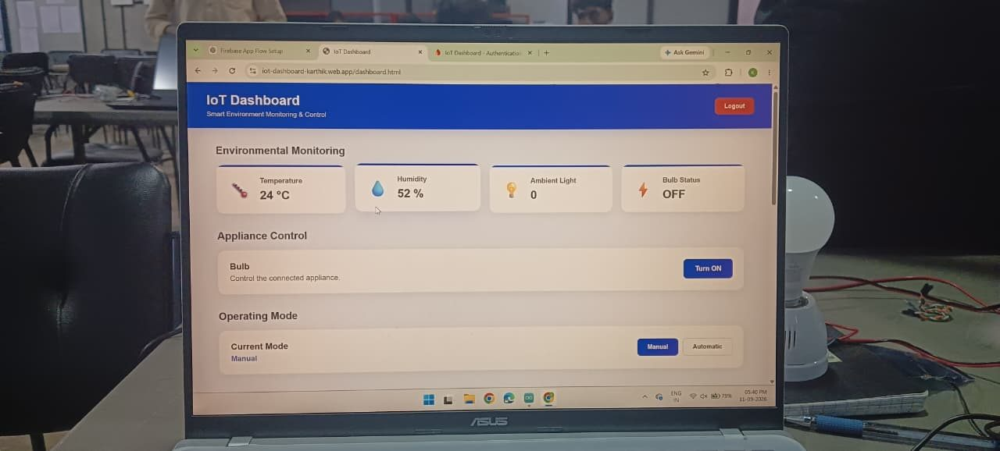
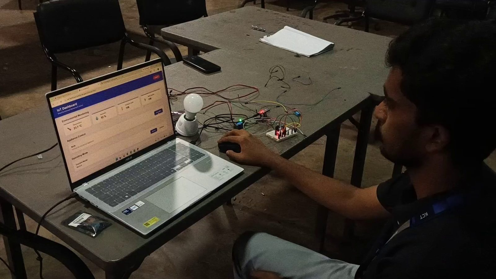
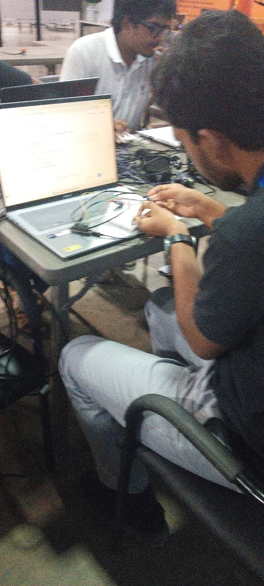
Problem: The Firebase CLI printed Assertion failed: !(handle->flags & UV_HANDLE_CLOSING) on Windows.
Solution: This is a known Node.js/libuv message on Windows terminals that appears after a
command has finished. It doesn't affect the result. Running firebase init auth
again completed the setup and wrote firebase.json.
Problem: Firestore refused requests from the ESP32 with "permission denied" once the database left test mode.
Solution: The rules require request.auth. I created a separate device user
in Firebase Authentication, and the ESP32 signs in with it (auth.user.email) before
reading or writing.
Problem: Google sign-in failed with an unauthorized domain error after deploying.
Solution: Added the hosting domain under Authentication → Settings → Authorized domains.
This was the first task where I built the whole stack myself: front end, authentication, database rules and device firmware. Using BaaS meant I wrote no server code, but I still had to think carefully about the data model and the security rules. Those two decide what the system can do and who is allowed to do it.
A complete smart-room system that monitors temperature, humidity and light, controls a bulb manually or automatically, records a timestamped history in Firebase, shows it as a chart and table, and exports it as a CSV file. It builds on the Task 4 dashboard and login.
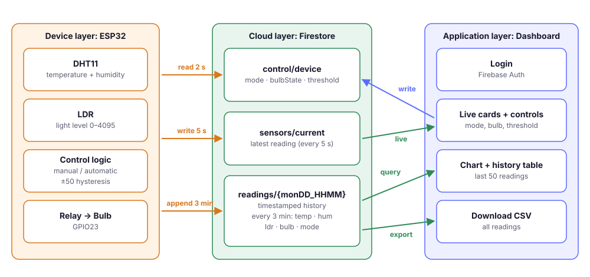
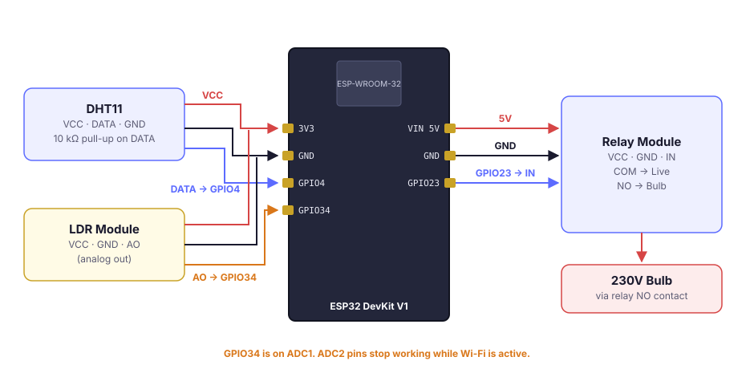
Every 2 s the ESP32 reads the DHT11. If a reading fails, it keeps the last good value (the DHT11
sometimes returns NaN). Every 5 s it writes the values to sensors/current.
The dashboard's temperature and humidity cards update live through onSnapshot. In the
screenshot below they show 24 °C and 52 %.
The LDR module's analog output goes to GPIO34 (an ADC1 pin, because ADC2 can't be used while Wi-Fi is on). With this module, a lower reading means a darker room. The firmware averages 10 samples per reading to smooth out ADC noise. The value is shown on the Ambient Light card.
In Manual mode, the dashboard's Turn ON / Turn OFF button writes
bulbState to control/device. The ESP32 reads it every 2 s and sets the
relay to match.
In Automatic mode the ESP32 ignores the manual command and decides from the light level. The dashboard disables the bulb button so the two modes can't conflict. The threshold is set from the dashboard (Save Threshold), so it can be retuned for a different room without uploading new firmware.
| Mode | Who controls the bulb | Firestore value | Dashboard |
|---|---|---|---|
| Manual | The user, from the dashboard button | mode: "manual" + bulbState | Bulb button enabled |
| Automatic | The ESP32, using the LDR value and the threshold | mode: "automatic" + threshold | Bulb button locked, threshold applies |
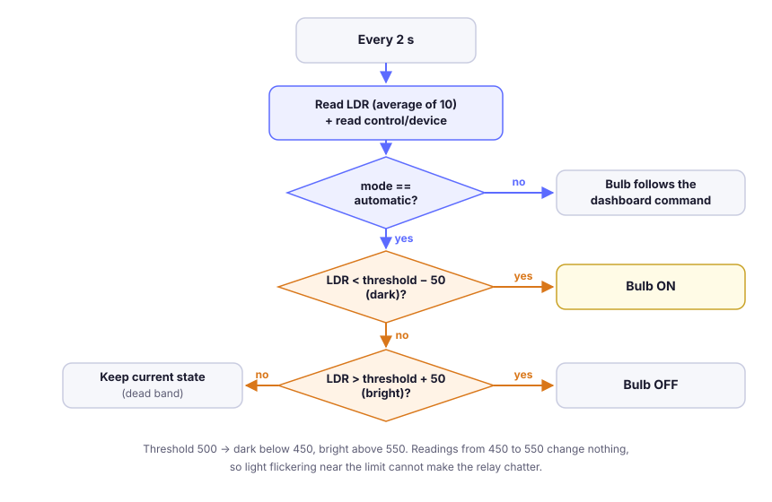
darkLimit = threshold − 50 and brightLimit = threshold + 50. With threshold 500 they are 450 and 550.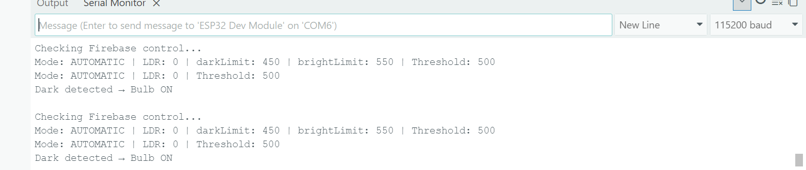
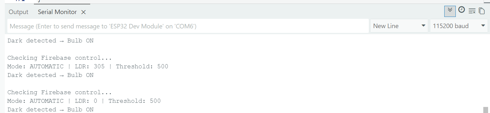
ldr_calibration.ino), which prints the raw value every 250 ms.control/device.threshold and the ESP32 applies it within 2 s.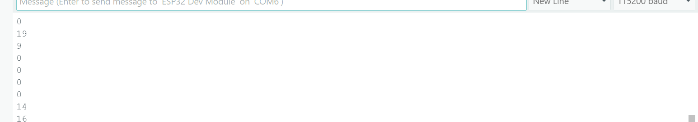
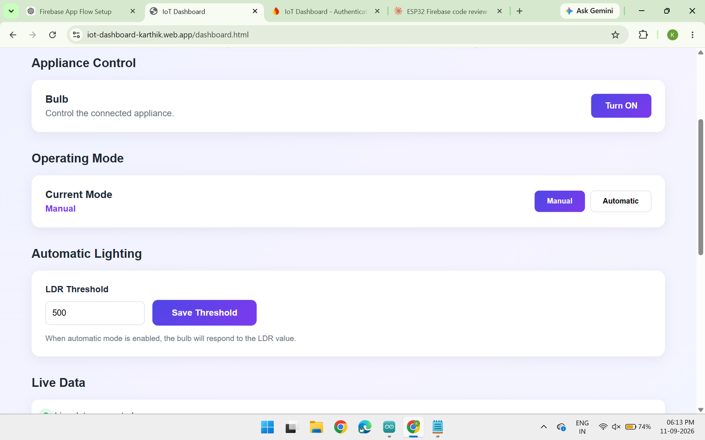
// Task 5 — LDR calibration sketch
// Prints the raw LDR value every 250 ms. Record the reading with the room
// lights on, then with the sensor covered / lights off, and pick a
// threshold between the two. That value is entered on the dashboard.
#define LDR_PIN 34
void setup() {
Serial.begin(115200);
analogReadResolution(12); // 0 – 4095
}
void loop() {
Serial.println(analogRead(LDR_PIN));
delay(250);
}
sensors/current is overwritten every 5 s, so on its own it keeps no history. For
logging, the ESP32 also adds a new document to the readings collection
every 3 minutes. The document ID is the local date and time, such as sep11_1745, so
entries are easy to read and unique. The security rules make readings append-only: entries can be created and read, but never
edited or deleted from a client.
readings)| Field | Type | Records |
|---|---|---|
timestamp | timestamp | Time of the reading (NTP-synced, UTC) |
temperature | number | DHT11 temperature, °C |
humidity | number | DHT11 relative humidity, % |
ldr | integer | Light level, 0–4095 |
bulbState | boolean | Bulb ON / OFF at that moment |
mode | string | manual or automatic |
Every log entry stores the timestamp, temperature and humidity, the LDR light level, the bulb status and the operating mode. So each row of the history shows both what the room was like and what the system did.
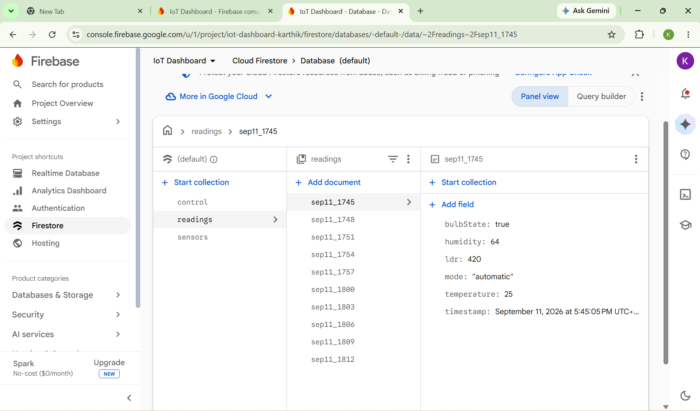
readings collection: one document every 3 minutes (sep11_1745 → sep11_1812), each with a timestamp, temperature, humidity, LDR, bulb state and mode.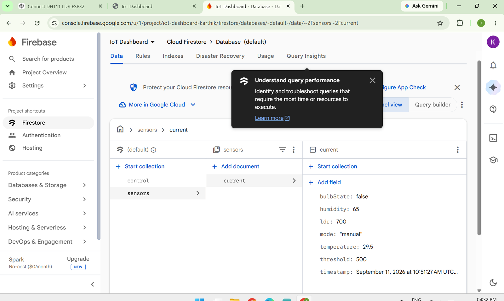
sensors/current: 29.5 °C, 65 %, LDR 700, mode, threshold and timestamp.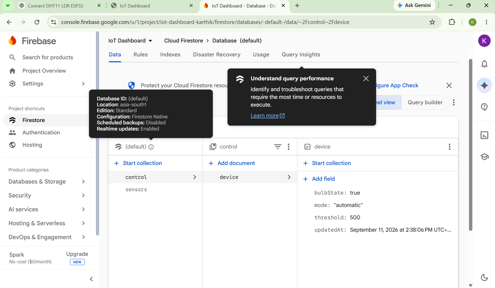
control/device switched to automatic, bulb ON.
The dashboard listens to the newest 50 readings entries (orderBy("timestamp", "desc"),
limit(50)). It draws them as a Chart.js line graph (temperature and humidity
on the left axis, LDR on the right) and as the Sensor History table. Download
CSV fetches the full log in time order, builds a CSV file in the browser, and
downloads it as iot-sensor-log-YYYY-MM-DD.csv.
All 10 recorded readings from the Firestore readings collection on 11 Sep 2026, in
the same columns as the dashboard's Sensor History table:
| Document | Timestamp | Temperature | Humidity | LDR | Bulb | Mode |
|---|---|---|---|---|---|---|
sep11_1745 | 5:45:05 PM | 25 °C | 64 % | 420 | ON | automatic |
sep11_1748 | 5:48:13 PM | 25 °C | 65 % | 418 | ON | automatic |
sep11_1751 | 5:51:27 PM | 24 °C | 63 % | 421 | ON | automatic |
sep11_1754 | 5:54:40 PM | 24 °C | 53 % | 419 | ON | automatic |
sep11_1757 | 5:57:34 PM | 24 °C | 52 % | 423 | ON | automatic |
sep11_1800 | 6:00:56 PM | 23 °C | 32 % | 425 | ON | automatic |
sep11_1803 | 6:03:12 PM | 23 °C | 34 % | 422 | ON | automatic |
sep11_1806 | 6:06:24 PM | 24 °C | 53 % | 427 | ON | automatic |
sep11_1809 | 6:09:49 PM | 24 °C | 64 % | 424 | ON | automatic |
sep11_1812 | 6:12:53 PM | 25 °C | 65 % | 420 | ON | automatic |
One reading every ~3 minutes from 5:45 PM to 6:12 PM. Temperature stayed between 23 and 25 °C, while humidity dipped to 32–34 % around 6:00 PM. Every LDR value (418–427) is below the dark limit of 450, so in automatic mode the bulb stayed ON throughout, as the automatic lighting logic expects.
Timestamp,Temperature (C),Humidity (%),LDR,Bulb,Mode
<ISO time>,<°C>,<%>,<0-4095>,ON|OFF,manual|automatic// Task 5 — Firebase Logging, Automation & Data Export (device side)
//
// DHT11 (GPIO4) --> temperature, humidity
// LDR (GPIO34) --> ambient light (12-bit ADC, LOWER value = DARKER)
// Relay (GPIO23) --> bulb
//
// Every 2 s : read control/device (mode, bulbState, threshold) and apply it
// Every 5 s : update sensors/current with the latest readings
// Every 3 min: append a timestamped entry to the readings collection
// (document ID = local date + time, e.g. readings/sep11_1745)
//
// Automatic mode uses hysteresis around the dashboard threshold:
// LDR < threshold - 50 -> dark -> bulb ON
// LDR > threshold + 50 -> bright -> bulb OFF
// in between -> keep the current state (no flicker)
//
// Libraries: "Firebase Arduino Client Library for ESP8266 and ESP32" (Mobizt),
// "DHT sensor library" (Adafruit)
#include <WiFi.h>
#include <Firebase_ESP_Client.h>
#include "addons/TokenHelper.h"
#include <DHT.h>
#include <time.h>
#define WIFI_SSID "YOUR_WIFI_SSID"
#define WIFI_PASSWORD "YOUR_WIFI_PASSWORD"
#define API_KEY "YOUR_FIREBASE_WEB_API_KEY"
#define FIREBASE_PROJECT_ID "iot-dashboard-karthik"
#define DEVICE_EMAIL "device@your-domain.com"
#define DEVICE_PASSWORD "YOUR_DEVICE_PASSWORD"
#define DHT_PIN 4
#define DHT_TYPE DHT11
#define LDR_PIN 34 // ADC1 input-only pin (ADC2 is unusable while Wi-Fi is on)
#define RELAY_PIN 23
#define HYSTERESIS 50
const unsigned long CONTROL_MS = 2000;
const unsigned long SENSOR_MS = 5000;
const unsigned long LOG_MS = 180000; // 3 minutes
DHT dht(DHT_PIN, DHT_TYPE);
FirebaseData fbdo;
FirebaseAuth auth;
FirebaseConfig config;
// Values mirrored from control/device
String mode = "manual";
bool manualCmd = false;
int threshold = 500;
// Live state
bool bulbState = false;
float temperature = NAN;
float humidity = NAN;
int ldrValue = 0;
unsigned long lastControl = 0, lastSensor = 0, lastLog = 0;
String isoTimestamp() {
time_t now;
time(&now);
char buf[25];
strftime(buf, sizeof(buf), "%Y-%m-%dT%H:%M:%SZ", gmtime(&now));
return String(buf);
}
// Average a few samples so a single noisy ADC read can't flip the bulb
int readLDR() {
long sum = 0;
for (int i = 0; i < 10; i++) {
sum += analogRead(LDR_PIN);
delay(2);
}
return sum / 10;
}
void readSensors() {
float t = dht.readTemperature();
float h = dht.readHumidity();
if (!isnan(t) && !isnan(h)) { // DHT11 occasionally returns NaN — keep last good value
temperature = t;
humidity = h;
} else {
Serial.println("DHT11 read failed - keeping last value");
}
ldrValue = readLDR();
}
void setBulb(bool on) {
bulbState = on;
digitalWrite(RELAY_PIN, on ? HIGH : LOW);
}
void readControl() {
if (!Firebase.Firestore.getDocument(&fbdo, FIREBASE_PROJECT_ID, "", "control/device", "")) {
Serial.println("Control read failed: " + fbdo.errorReason());
return;
}
FirebaseJson json;
FirebaseJsonData d;
json.setJsonData(fbdo.payload());
json.get(d, "fields/mode/stringValue");
if (d.success) mode = d.stringValue;
json.get(d, "fields/bulbState/booleanValue");
if (d.success) manualCmd = d.boolValue;
json.get(d, "fields/threshold/integerValue"); // Firestore sends integers as strings
if (d.success) threshold = d.stringValue.toInt();
else {
json.get(d, "fields/threshold/doubleValue");
if (d.success) threshold = (int)d.doubleValue;
}
}
void applyLogic() {
int darkLimit = threshold - HYSTERESIS;
int brightLimit = threshold + HYSTERESIS;
if (mode == "automatic") {
Serial.printf("Mode: AUTOMATIC | LDR: %d | darkLimit: %d | brightLimit: %d | Threshold: %d\n",
ldrValue, darkLimit, brightLimit, threshold);
if (ldrValue < darkLimit && !bulbState) {
setBulb(true);
} else if (ldrValue > brightLimit && bulbState) {
setBulb(false);
}
Serial.println(bulbState ? "Dark detected → Bulb ON" : "Bright → Bulb OFF");
} else {
if (manualCmd != bulbState) setBulb(manualCmd);
Serial.printf("Mode: MANUAL | Bulb: %s\n", bulbState ? "ON" : "OFF");
}
}
// Fills the shared field set used by sensors/current and readings/*.
// The threshold is only stored on sensors/current.
void fillFields(FirebaseJson& c, bool withThreshold) {
c.set("fields/temperature/doubleValue", isnan(temperature) ? 0 : temperature);
c.set("fields/humidity/doubleValue", isnan(humidity) ? 0 : humidity);
c.set("fields/ldr/integerValue", String(ldrValue));
c.set("fields/bulbState/booleanValue", bulbState);
c.set("fields/mode/stringValue", mode);
if (withThreshold) c.set("fields/threshold/integerValue", String(threshold));
c.set("fields/timestamp/timestampValue", isoTimestamp());
}
void updateCurrent() {
FirebaseJson c;
fillFields(c, true);
if (!Firebase.Firestore.patchDocument(&fbdo, FIREBASE_PROJECT_ID, "", "sensors/current", c.raw(),
"temperature,humidity,ldr,bulbState,mode,threshold,timestamp")) {
Serial.println("sensors/current write failed: " + fbdo.errorReason());
}
}
void appendLog() {
FirebaseJson c;
fillFields(c, false);
// Readable, unique-per-3-minutes ID in local time: "sep11_1745"
time_t now;
time(&now);
char id[16];
strftime(id, sizeof(id), "%b%d_%H%M", localtime(&now));
for (char* p = id; *p; p++) *p = tolower(*p);
String path = "readings/" + String(id);
if (Firebase.Firestore.createDocument(&fbdo, FIREBASE_PROJECT_ID, "", path.c_str(), c.raw())) {
Serial.println("Logged -> " + path);
} else {
Serial.println("Log write failed: " + fbdo.errorReason());
}
}
void setup() {
Serial.begin(115200);
pinMode(RELAY_PIN, OUTPUT);
setBulb(false);
analogReadResolution(12);
dht.begin();
WiFi.begin(WIFI_SSID, WIFI_PASSWORD);
Serial.print("Connecting to Wi-Fi");
while (WiFi.status() != WL_CONNECTED) {
delay(300);
Serial.print(".");
}
Serial.println("\nWi-Fi connected: " + WiFi.localIP().toString());
// IST (UTC+5:30) so reading IDs use local time; timestamps stay in UTC
configTime(19800, 0, "pool.ntp.org", "time.google.com");
Serial.print("Syncing time");
while (time(nullptr) < 1700000000) {
delay(300);
Serial.print(".");
}
Serial.println(" done");
config.api_key = API_KEY;
auth.user.email = DEVICE_EMAIL;
auth.user.password = DEVICE_PASSWORD;
config.token_status_callback = tokenStatusCallback;
Firebase.begin(&config, &auth);
Firebase.reconnectWiFi(true);
}
void loop() {
if (!Firebase.ready()) return;
unsigned long now = millis();
if (now - lastControl >= CONTROL_MS) {
lastControl = now;
Serial.println("\nChecking Firebase control...");
readSensors();
readControl();
applyLogic();
}
if (now - lastSensor >= SENSOR_MS) {
lastSensor = now;
updateCurrent();
}
if (now - lastLog >= LOG_MS) {
lastLog = now;
appendLog();
}
}// Task 5 dashboard: live readings, manual/automatic mode, LDR threshold,
// history table + chart from the readings collection, and CSV export.
import { auth, db } from "./firebase-config.js";
import { onAuthStateChanged, signOut } from "https://www.gstatic.com/firebasejs/10.12.2/firebase-auth.js";
import {
doc, collection, query, orderBy, limit,
onSnapshot, setDoc, getDocs, serverTimestamp
} from "https://www.gstatic.com/firebasejs/10.12.2/firebase-firestore.js";
const $ = (id) => document.getElementById(id);
const controlRef = doc(db, "control", "device");
const sensorRef = doc(db, "sensors", "current");
const readingsQuery = query(collection(db, "readings"), orderBy("timestamp", "desc"), limit(50));
let control = { bulbState: false, mode: "manual", threshold: 500 };
let chart;
onAuthStateChanged(auth, (user) => {
if (!user) {
window.location.href = "login.html";
return;
}
console.log("Logged in user:", user.email);
$("userEmail").textContent = user.email;
startListeners();
});
function startListeners() {
onSnapshot(sensorRef, (snap) => {
if (!snap.exists()) return;
const d = snap.data();
$("temp").textContent = `${d.temperature} °C`;
$("hum").textContent = `${d.humidity} %`;
$("ldr").textContent = d.ldr;
$("bulbStatus").textContent = d.bulbState ? "ON" : "OFF";
});
onSnapshot(controlRef, (snap) => {
if (!snap.exists()) return;
control = { ...control, ...snap.data() };
renderControl();
});
onSnapshot(readingsQuery, (snap) => {
// Newest first from Firestore; oldest first reads better on a chart
const rows = snap.docs.map((d) => d.data()).filter((r) => r.timestamp).reverse();
renderTable(rows);
renderChart(rows);
});
}
function renderControl() {
const auto = control.mode === "automatic";
$("modeLabel").textContent = auto ? "Automatic" : "Manual";
document.querySelectorAll(".mode-btn").forEach((b) =>
b.classList.toggle("active", b.dataset.mode === control.mode));
$("bulbBtn").textContent = control.bulbState ? "Turn OFF" : "Turn ON";
// In automatic mode the LDR owns the bulb, so manual control is locked
$("bulbBtn").disabled = auto;
$("bulbHint").textContent = auto
? "Automatic mode is on: the LDR controls the bulb."
: "Control the connected appliance.";
if (document.activeElement !== $("thresholdInput")) $("thresholdInput").value = control.threshold;
}
const fmt = (ts) => ts.toDate().toLocaleString();
function renderTable(rows) {
const body = $("historyBody");
if (!rows.length) {
body.innerHTML = '<tr><td colspan="6">No historical data available</td></tr>';
return;
}
body.innerHTML = rows.slice().reverse().map((r) => `
<tr>
<td>${fmt(r.timestamp)}</td>
<td>${r.temperature} °C</td>
<td>${r.humidity} %</td>
<td>${r.ldr}</td>
<td>${r.bulbState ? "ON" : "OFF"}</td>
<td>${r.mode}</td>
</tr>`).join("");
}
function renderChart(rows) {
const labels = rows.map((r) => r.timestamp.toDate().toLocaleTimeString());
const data = {
labels,
datasets: [
{ label: "Temperature (°C)", data: rows.map((r) => r.temperature), borderColor: "#dc2626", yAxisID: "y" },
{ label: "Humidity (%)", data: rows.map((r) => r.humidity), borderColor: "#2563eb", yAxisID: "y" },
{ label: "LDR", data: rows.map((r) => r.ldr), borderColor: "#d97706", yAxisID: "y1" }
]
};
if (chart) {
chart.data = data;
chart.update();
return;
}
chart = new Chart($("historyChart"), {
type: "line",
data,
options: {
responsive: true,
maintainAspectRatio: false,
interaction: { mode: "index", intersect: false },
elements: { point: { radius: 2 }, line: { tension: 0.3, borderWidth: 2 } },
scales: {
y: { position: "left", title: { display: true, text: "°C / %" } },
y1: { position: "right", grid: { drawOnChartArea: false }, title: { display: true, text: "LDR (0–4095)" } }
}
}
});
}
async function writeControl(patch) {
await setDoc(controlRef, { ...patch, updatedAt: serverTimestamp() }, { merge: true });
}
$("bulbBtn").addEventListener("click", () => {
console.log("Bulb command:", !control.bulbState);
writeControl({ bulbState: !control.bulbState });
});
document.querySelectorAll(".mode-btn").forEach((b) =>
b.addEventListener("click", () => writeControl({ mode: b.dataset.mode })));
$("saveThreshold").addEventListener("click", () => {
const value = parseInt($("thresholdInput").value, 10);
if (Number.isNaN(value) || value < 0 || value > 4095) {
alert("Threshold must be between 0 and 4095.");
return;
}
writeControl({ threshold: value });
});
// CSV export: fetches every reading (not just the 50 rows on screen)
$("csvBtn").addEventListener("click", async () => {
const snap = await getDocs(query(collection(db, "readings"), orderBy("timestamp", "asc")));
if (snap.empty) {
alert("No data to export yet.");
return;
}
const header = "Timestamp,Temperature (C),Humidity (%),LDR,Bulb,Mode";
const lines = snap.docs.map((d) => {
const r = d.data();
return [
r.timestamp.toDate().toISOString(),
r.temperature, r.humidity, r.ldr,
r.bulbState ? "ON" : "OFF", r.mode
].join(",");
});
const blob = new Blob([[header, ...lines].join("\n")], { type: "text/csv" });
const a = document.createElement("a");
a.href = URL.createObjectURL(blob);
a.download = `iot-sensor-log-${new Date().toISOString().slice(0, 10)}.csv`;
a.click();
URL.revokeObjectURL(a.href);
});
$("logoutBtn").addEventListener("click", () => signOut(auth));<!DOCTYPE html>
<html lang="en">
<head>
<meta charset="UTF-8">
<meta name="viewport" content="width=device-width, initial-scale=1">
<title>IoT Dashboard</title>
<!-- login.html, css/style.css, js/firebase-config.js and js/auth.js are
the same files as Task 4 (task4-firebase-dashboard/web). -->
<link rel="stylesheet" href="css/style.css">
<script src="https://cdnjs.cloudflare.com/ajax/libs/Chart.js/4.4.1/chart.umd.min.js"></script>
</head>
<body>
<header class="topbar">
<div>
<h1>IoT Dashboard</h1>
<p>Smart Environment Monitoring & Control</p>
</div>
<div class="user">
<span id="userEmail"></span>
<button class="btn-danger" id="logoutBtn">Logout</button>
</div>
</header>
<main class="container">
<h2>Environmental Monitoring</h2>
<section class="cards">
<div class="card stat"><span class="icon">🌡️</span><div><small>Temperature</small><strong id="temp">-- °C</strong></div></div>
<div class="card stat"><span class="icon">💧</span><div><small>Humidity</small><strong id="hum">-- %</strong></div></div>
<div class="card stat"><span class="icon">💡</span><div><small>Ambient Light</small><strong id="ldr">--</strong></div></div>
<div class="card stat"><span class="icon">⚡</span><div><small>Bulb Status</small><strong id="bulbStatus">--</strong></div></div>
</section>
<h2>Appliance Control</h2>
<section class="card row">
<div>
<h3>Bulb</h3>
<p class="muted" id="bulbHint">Control the connected appliance.</p>
</div>
<button class="btn-primary" id="bulbBtn">Turn ON</button>
</section>
<h2>Operating Mode</h2>
<section class="card row">
<div>
<h3>Current Mode</h3>
<strong id="modeLabel" style="color:#2563eb">Manual</strong>
</div>
<div class="mode-group">
<button class="mode-btn" data-mode="manual">Manual</button>
<button class="mode-btn" data-mode="automatic">Automatic</button>
</div>
</section>
<h2>Automatic Lighting</h2>
<section class="card">
<h3>LDR Threshold</h3>
<div class="threshold">
<input type="number" id="thresholdInput" min="0" max="4095" step="10" value="500">
<button class="btn-primary" id="saveThreshold">Save Threshold</button>
</div>
<p class="muted">When automatic mode is enabled, the bulb will respond to the LDR value.</p>
</section>
<h2>Historical Data</h2>
<section class="card chart-box"><canvas id="historyChart"></canvas></section>
<h2>Sensor History</h2>
<section class="card table-wrap">
<table>
<thead>
<tr><th>Timestamp</th><th>Temperature</th><th>Humidity</th><th>LDR</th><th>Bulb</th><th>Mode</th></tr>
</thead>
<tbody id="historyBody">
<tr><td colspan="6">No historical data available</td></tr>
</tbody>
</table>
</section>
<div class="actions"><button class="btn-primary" id="csvBtn">Download CSV</button></div>
</main>
<footer>By: Karthik Aravind M</footer>
<script type="module" src="js/dashboard.js"></script>
</body>
</html>Login, auth, Firebase config, styles and security rules are the same as in Task 4.
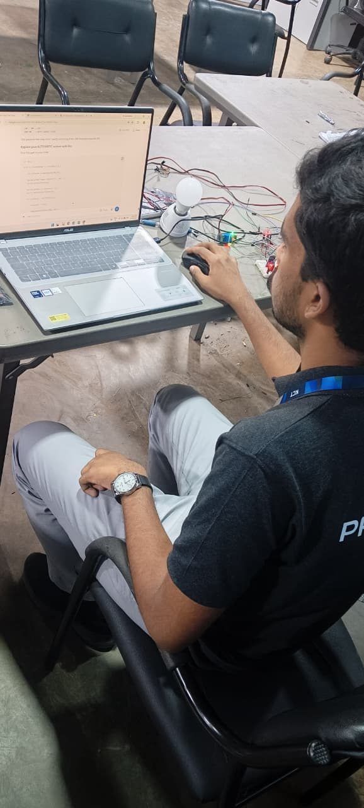
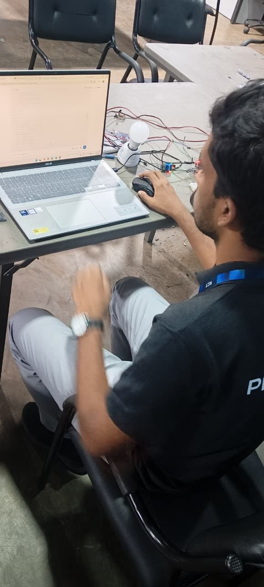
Problem: The relay chattered (clicked on and off quickly) when the light level was close to the threshold.
Solution: Replaced the single threshold with darkLimit /
brightLimit (±50) and averaged 10 ADC samples per reading. The Serial Monitor log
shows the new limits.
Problem: The Sensor History table showed "No historical data available".
Solution: The firmware only overwrote sensors/current, so there was no
history to show. I added an append-only readings collection that gets a new entry
every 3 minutes (sep11_1745, sep11_1748, …), and the dashboard reads
that collection.
Problem: Analog readings stopped working on some pins once Wi-Fi connected.
Solution: ADC2 is shared with the Wi-Fi radio. I moved the LDR to GPIO34, which is on ADC1.
Problem: The first log entries had a 1970 timestamp.
Solution: The ESP32 had no clock yet. setup() now waits for NTP time
before it starts logging.
Task 5 brought everything together: sensing, local decisions, cloud state, history and a user
interface. My main lesson was to keep the live state (sensors/current)
separate from the history (readings). They are read and written in completely
different ways. I also learned that "automatic" control still needs a person to calibrate it,
and that small details like hysteresis, ADC pin choice and clock sync decide whether a prototype
is reliable.
| Task | Trigger | Range | Protocol | Platform |
|---|---|---|---|---|
| 1: Web Server | Browser click | Local Wi-Fi | HTTP | ESP32 itself |
| 2: Adafruit IO | Dashboard toggle | Internet | MQTT | Adafruit IO |
| 3: IFTTT | Voice command | Internet | HTTPS → MQTT | IFTTT + Adafruit IO |
| 4: Firebase Dashboard | Logged-in web app | Internet | HTTPS (Firestore) | Firebase |
| 5: Logging & Automation | Light level + web app | Internet + autonomous | HTTPS (Firestore) | Firebase |